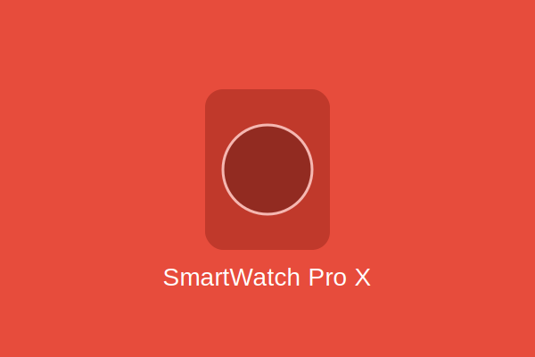

スマートウォッチ Pro X
¥54,800（税込）
ビジネスシーンにもフィットするプレミアムスマートウォッチ。 心拍数、血中酸素濃度、睡眠品質を24時間モニタリング。 GPS内蔵で正確なワークアウト記録が可能。 常時点灯AMOLEDディスプレイと5日間持続するバッテリーを搭載。
カタログをダウンロード製品仕様
| ディスプレイ | 1.4インチ AMOLED（常時点灯対応） |
| 解像度 | 454 x 454 |
| バッテリー持続時間 | 最大5日間（通常使用） |
| 防水性能 | 5ATM |
| センサー | 心拍数 / SpO2 / 加速度 / ジャイロ / GPS |
| 対応OS | iOS 14以上 / Android 8以上 |